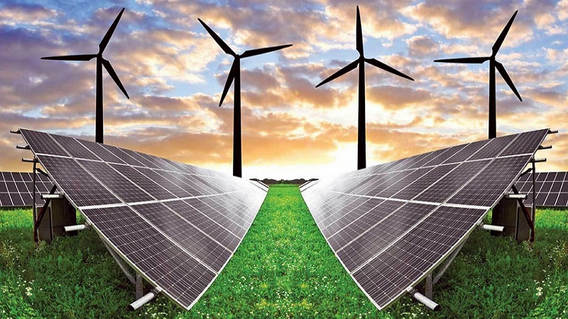

La energía solar y eólica son parte integral de diferentes recursos energéticos renovables, en general, y, en particular, son la principal y continua variable de entrada del prácticamente inagotable sol. Se espera que la energía solar desempeñe un papel muy importante en el futuro, especialmente en los países en desarrollo, pero también tiene potencial en los países desarrollados. En los últimos años, la energía eólica ha mostrado la tasa de crecimiento más rápida de cualquier forma de generación de electricidad con su desarrollo estimulado por las preocupaciones de los responsables políticos nacionales sobre el cambio climático, la diversidad energética y la seguridad del suministro.
